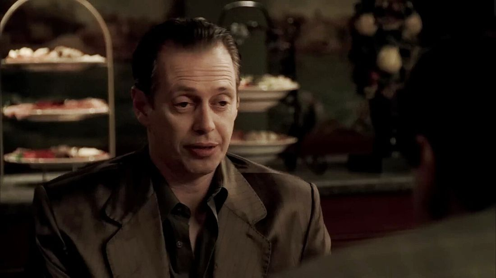

Personajes
Quince personajes y los actores que les dieron vida, agrupados según de qué lado de la mesa se sientan: la familia de sangre, la Familia y los que andan cerca.
La familia Soprano
La casa de North Caldwell: la familia de sangre, con todo lo que Tony no les cuenta.
-

-

Carmela Soprano
Interpretado por Edie Falco
Esposa de Tony. Sabe de dónde sale el dinero y negocia con esa verdad todos los días, entre la iglesia, la casa y sus propias ambiciones.
Foto: David Shankbone · CC BY-SA 3.0
-

-

-

-

La organización
La otra Familia: los capos y soldados que trabajan para Tony, y que a veces conspiran contra él.


El entorno
Los que están cerca de Tony sin ser de la casa ni del grupo, y cambian el rumbo de la historia.
-

Dra. Jennifer Melfi
Interpretado por Lorraine Bracco
La psiquiatra de Tony. Durante seis temporadas sostiene un tratamiento con un paciente que la fascina y la inquieta a partes iguales.
Foto: Iustinus · CC BY-SA 3.0
-

-

Las imágenes son de uso libre y están acreditadas una por una: los fotogramas los publicó HBO bajo licencia CC BY 3.0 y las fotos de Edie Falco y Lorraine Bracco son de sus autores, bajo Creative Commons. Hay más en la galería.